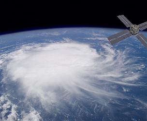

Quasi Two-dimensional flows
Each of us has in mind a satellite picture from the 8pm news showing the large anticyclones that dictate tomorrow's weather. These are so much larger than the atmosphere thickness that we instinctively think of them as two-dimensional objects. Mostly, we are right to do so as their dynamics is essentially a 2D one, and not only so because they are so thin, but also because the Earth's rotation tends to smooth out any variation of velocity or pressure across their thickness. Nevertheless, our experience of bumpy plane descents tells us that strong wind gradients do exist close to the ground, albeit in a small layer compared to the atmosphere thickness. This layer, called the Ekman layer, and the different sublayers is it made of, play a key role in the overall dynamics of the atmospheric structures. Because of these 3D effects, atmospheric flows are not just 2D but rather quasi-2D. Understanding these departures to two-dimensionality and modelling the overall behaviour of quasi-2D flows is a fascinating physical and mathematical challenge that takes us even beyond atmospheric flows: experiments conducted in the 60's indeed revealed that similar phenomena took place in layers of electrically conducting fluids (such as mercury, or electrolytes), subject to a strong transverse static magnetic field. To understand these flows better and the natural or industrial processes they drive, we single out the mathematical structure behind this similarity. We also take advantage of the near invariance of these flows in their transversal direction to derive two-dimensional equations that govern their dynamics. Since, however, these flows aren't exactly 2D, these equations aren't exactly the 2D Navier stokes equations of fluid mechanics. They exhibit a wealth of additional properties, which we explore with numerical simulations and experiments.
|  |

|

| |||
| Atmospheric vortex | Jupiter's great red spot | Quasi-2D layer of Gallium in a transverse magnetic field with electric current injected at two electrodes of opposite polarities [read article] | |||